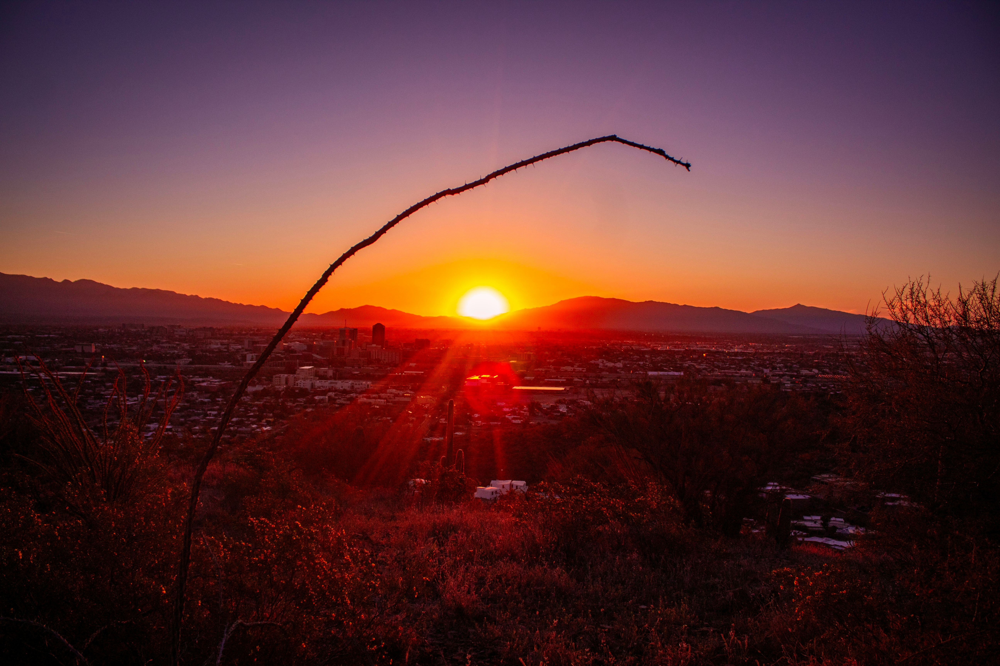

Explore Tucson's Beautiful Desert Scenery
One of Tucson's greatest features is the quality and quantity of its hiking trails. From its short yet beautiful strolls to its longer, more technical hikes, Tucson's nature has something for everyone. Take a look below and find a hike that's perfect for you.
Cacti Scenery
Tucson is home to a variety of cacti, including the iconic saguaro cactus. These cacti can be found all around Tucson and are a staple of the Sonoran Desert. The saguaro cactus is the largest cactus in the United States and can grow up to 40 feet tall.
Sunrise and Sunsets
Tucson is known for its beautiful sunrises and sunsets. Many Tucson natives and visitors alike enjoy watching the sun rise and set over the mountains. There are many great hiking trails that offer a great view of the sunrise and sunset atop various mountains in Tucson.
Hiking Trails in Tucson, AZ
| Trail Name | Trail Distance | Estimated Hike Time |
|---|---|---|
| Bear Canyon to Seven Falls | 8.4 miles | 3 hours 31 minutes |
| Phoneline Trail to Blackett's Ridge and Saddleback | 5.7 miles | 3 hours 31 minutes |
| Sutherland and Canyon Loop Trail | 2.3 miles | 52 minutes |
| Bridal Wreath Falls Trail | 5.9 miles | 2 hours 49 minutes |
| Sabino Walkway Loop | 2.3 miles | 48 minutes |
| Tumamoc Hill Trail | 2.9 miles | 1 hour 35 minutes |
| Linda Vista Loop Trail | 2.6 miles | 1 hour 12 minutes |